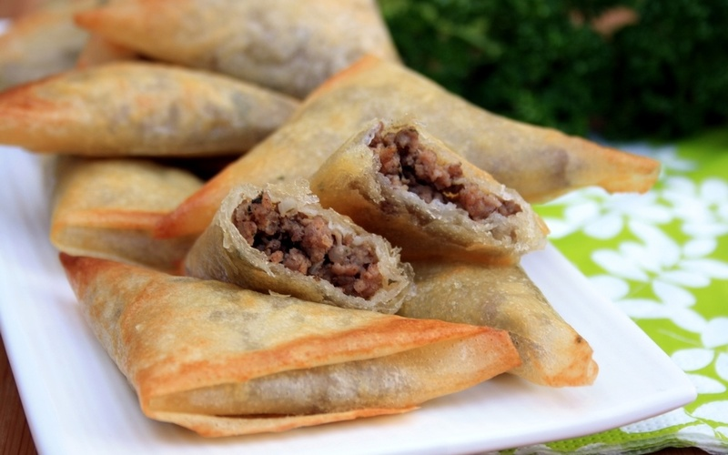

Samoussa viande hachée et St Môret
INGREDIENTS (3 PERS)
- Viande hâchée (environ 500g)
- St Moret ou fromage frais (150g)
- 2 ails
- Feuilles de bricks
PREPARATION
- Préparez dans un premier temps la viande. Pour cela, faire revenir la viande hachée avec 2 ails coupés en tout petit. Salez, poivrez.
- Une fois cuite, y ajouter le St Moret (complet) et laissez sur feu très bas.